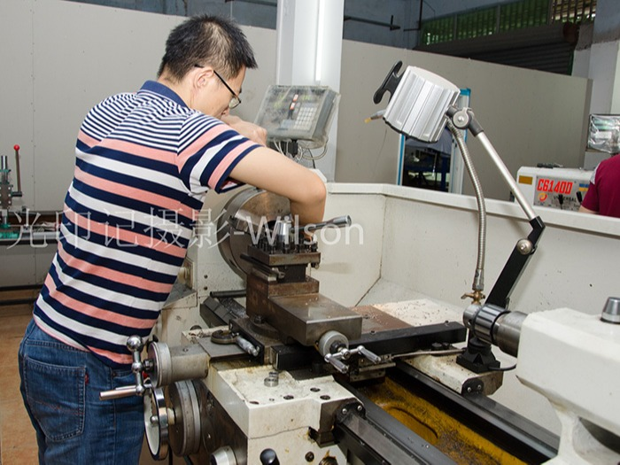

随着经济的高速发展，我们在机床数控行业领域的技术也在不断改革、创新，无论是整体质量标准，还是精度系数都有了很大的转变，在这个工业发展如此之快的今天，启英机械就此分析一下，高速发展的时代对于机床直线导轨的损耗到底有什么关系呢?又会影响到哪些方面呢?
直线导轨系统的牢靠元件(导轨)的底子功能犹如轴承环，安装于钢球的支架，形状为“v”字形。支架包裹着导轨的顶部以及两侧面上。为了能够支撑机床的系统元部件，通常一套直线导轨至少会有四个支架。主要用于支撑大型的元部件，支架的数量可以多于四个。

机床的系统元部件在进行挪动时，钢球就在支架的沟槽中轮回举动，将支架的磨损量分摊到各个钢球上，从而延长了直线导轨的使用寿命。为了能够排除支架和导轨两间的缝隙，预加负载能够增进导轨系统的稳定性，预加负荷的获得.在于导轨与支架之间所安设的尺寸钢球。一般钢球直径公差为±20微米，以0.5微米为增量，将钢球进行筛选分类，划分到导轨上，预加负载的大小，取决于在钢球上的作用力。如果钢球上的作用力较大，承受预加负荷的时间过长，这会导致支架活动阻力增加，就会产生平衡沾染误差;为了增进系统的灵敏度，相对应地减少预加负荷，同时也为了能够增进勾当精度以及它的保持性，恳求需要有足够的预加负数，这完全是抵触的两方面。
东莞市启英机械设备有限公司是华南地区较具实力的传动元件生产厂家及服务商，公司客户遍布全国各地。主营产品有SMC气动元件，直线滑轨，TBI滚珠丝杠，滚珠花键。联系方式：400-8399-928。
 扫一扫
扫一扫
启英机械